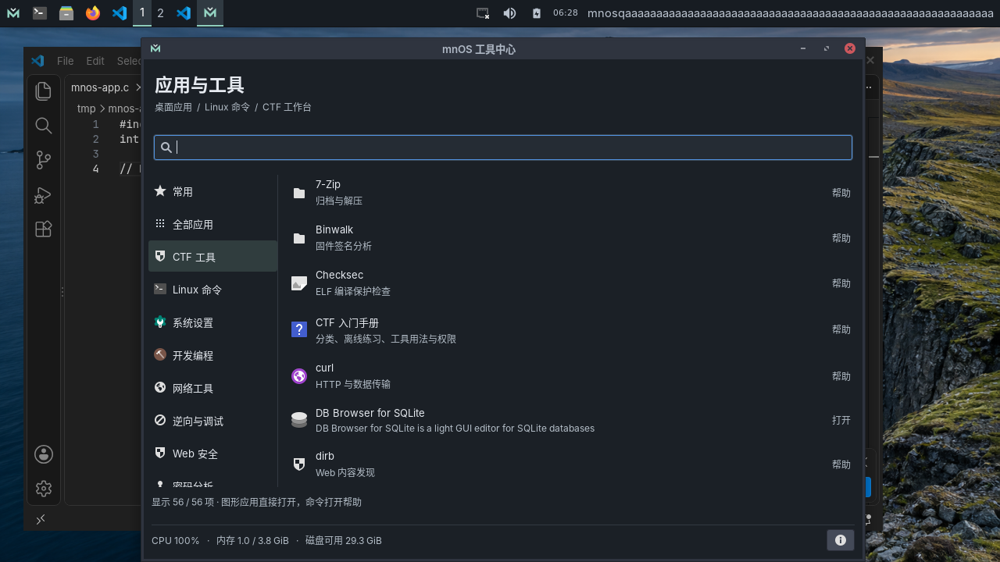

编辑、编译与调试
VS Code、GCC、G++、GDB、CMake。
从编辑，到编译，再到调试。
hello.cppC++
#include <iostream>
int main() {
std::cout << "Hello, mnOS.\n";
return 0;
} C++ 示例 · 使用 G++ 编译
LINUX EDITION · 独立系统
基于 Debian Linux 与 Xfce，集成 mnOS 工具中心。
下载独立 ISO，安装后直接进入 Linux 桌面。

LINUX EDITION · 软件与工具
工具中心按用途分类，也可以从终端运行命令。
VS Code、GCC、G++、GDB、CMake。
从编辑，到编译，再到调试。
#include <iostream>
int main() {
std::cout << "Hello, mnOS.\n";
return 0;
}网络分析、逆向调试、取证与 Web 工具。
按类别查找，打开工具就能查看帮助。
软件管理
新版本的 mnos 命令统一管理组件与更新。帮助跟随系统语言，help -en 和 help -cn 可分别查看英文、中文说明。
sudo mnos apt install nano nmap保留 APT 的依赖解析和安装确认。普通应用正常运行无需 root，修改系统软件需要 sudo。
详细帮助：help -cn aptLINUX EDITION · 配置与维护
Full 面向完整工具环境；Lite 面向精简的 C / C++ 工作流，不包含 Python 和额外登录因素。已发布的组合在下载区列出。
日常应用使用普通账号。管理操作再提权；安装时可以选择是否为该账号开放特权网络工具。
更新命令先验证签名版本索引，再交给 APT。组件版本保留，便于明确选择回退；这不等于整盘系统快照。
单独下载 · 单独安装
此页只提供独立 Linux 系统 ISO，按架构选择后单独安装。
此 ISO 安装独立的 Linux 系统。Firefox、VS Code、APT 与 CTF 工具在 Linux 系统内运行。
资源目录载入中
同一架构的镜像用于已支持的虚拟机和硬件。请先阅读测试范围；ARM64 并不代表能直接安装到所有 ARM 设备。
系统支持
Bug、启动异常或硬件兼容性问题，都可以发给我们。